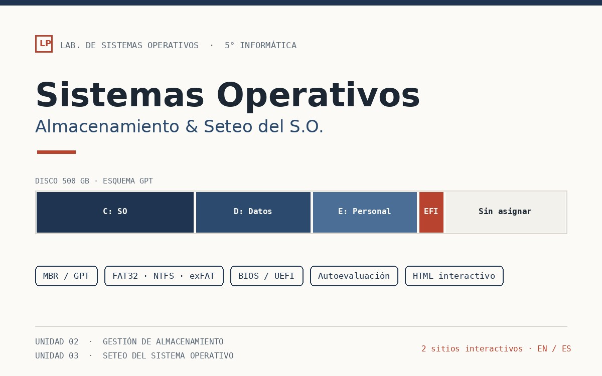

Diseño UX y de producto
Investigación con usuarios reales, personas y mapas de empatía, flujos de interacción, prototipos de baja a alta fidelidad, design systems y testeo de usabilidad antes de escribir una línea de código.
FigmaFigJamMazeAdobe CC
Experiencia de aprendizaje · UX · Datos
Convierto requerimientos técnicos y de negocio complejos en experiencias de aprendizaje que la gente realmente termina. Teoría del aprendizaje adulto, práctica de UX y datos, funcionando como una sola cosa.
Práctica / 02
No separo la pedagogía de la interfaz, ni la interfaz de la evidencia. Un producto de aprendizaje sólo funciona cuando las tres se sostienen juntas.
Investigación con usuarios reales, personas y mapas de empatía, flujos de interacción, prototipos de baja a alta fidelidad, design systems y testeo de usabilidad antes de escribir una línea de código.
Arquitectura curricular, módulos SCORM, HTML interactivo, estrategia de evaluación y práctica de recuperación. Pedagógicamente sólido y pensado para que lo mantenga quien lo herede.
Encuestas y entrevistas a escala, evaluación Kirkpatrick, dashboards y reportes de impacto. El punto nunca es publicar un curso: es demostrar que movió algo.
Proyectos / 01
Diez proyectos, cada uno una forma distinta de responder la misma pregunta: qué necesita poder hacer esta persona, y cómo vamos a saber que puede hacerlo.
 01 / 2026
01 / 2026
Un módulo SCORM que convierte ciclos de vida de proyectos, diagramas de Gantt y flujos de GitHub en un recorrido que los estudiantes de 7mo año de informática realmente quieren transitar.

02 / 2026Dos sitios interactivos programados a mano y un motor de autoevaluación aleatorizado, construidos alrededor de la práctica de recuperación y no de la memorización.
 03 / 2025
03 / 2025
Un video conceptual sobre el paso de la educación bancaria a un modelo facilitador centrado en el estudiante, basado en el marco TPACK.
 04 / 2024
04 / 2024
Una iniciativa multimedia a gran escala sobre seguridad digital: once equipos, una fase de investigación masiva y un ecosistema de podcast interactivo construido sobre lo que dijeron los datos.
 05 / 2022-2024
05 / 2022-2024
Auditar hardware y software en toda una institución, y documentarlo con tanto detalle que el siguiente equipo pudiera sostenerlo sin mí.
 06 / 2024
06 / 2024
El video de apertura de la Expo Informática 2024, producido con After Effects, Premiere e IA generativa en torno a la temática de ciudades inteligentes.
 07 / 2024
07 / 2024
Un producto digital que elimina la presencia física como requisito para hacer ciencia, validado con testeo de usuarios en vivo antes del desarrollo.
 08 / 2024
08 / 2024
Un corto animado inspirado en El Cuervo, con visuales generados por IA animados en Runway y una banda sonora original generada con IA.
 09 / 2022
09 / 2022
Un programa de aula inspirado en TED que ayuda a estudiantes técnicos a transformar temas complejos de informática en charlas que la gente realmente quiere escuchar.
 10 / 2019
10 / 2019
Un video síntesis que destila la arquitectura ERP y sus diez factores críticos de éxito para estudiantes de ingeniería en sistemas.
Todavía no hay proyectos en esta categoría.
Proceso / 03
Definición incorrecta, solución incorrecta.
El principio que les enseño a mis estudiantes, y con el que me mido a mí misma. Nada de proyectos hipotéticos: una persona concreta con una necesidad concreta, validada antes de construir nada.
Entrevistas estructuradas, auditorías y benchmarking para separar el síntoma de la causa raíz. Nada se diseña sobre un supuesto.
Objetivos de aprendizaje, arquitectura de contenidos, flujos de interacción y prototipos. Pedagogía e interfaz se deciden en la misma mesa.
Módulos SCORM, HTML programado a mano, video, motion y documentación. Entregado accesible, responsive y listo para transferir.
Testeo de usabilidad, datos de evaluación y análisis de impacto. Los hallazgos vuelven directo a la siguiente iteración.
Sobre mí / 04
Soy Diseñadora Instruccional y de Experiencias de Aprendizaje con más de siete años ayudando a organizaciones a convertir necesidades técnicas y de negocio complejas en experiencias de aprendizaje que realmente perduran.
Siempre creí que, para que el aprendizaje sea efectivo, tiene que estar centrado en las personas. Por eso tiendo puentes entre la teoría del aprendizaje de adultos y los principios de UX para crear experiencias inclusivas y genuinamente atractivas, ya sea estructurando información compleja u optimizando un flujo de formación.
También creo firmemente en el diseño guiado por datos. No solo creo contenido: miro los números, para asegurar que cada solución de aprendizaje tenga un impacto real y medible en el crecimiento del negocio y el desarrollo del talento.
Hablemos
Ya sea que estés armando un programa de formación desde cero, rescatando uno que nadie termina, o tratando de demostrar que el tuyo funciona, escribime.